Instrument Panel Lower Installation |
| 1. Install Navigation Antenna Cord (w/ HDD Navigation System) |
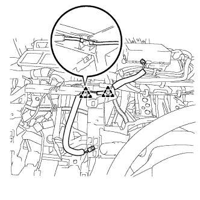 |
Engage the 2 clamps and install the navigation antenna cord to the instrument panel LWR.
| 2. Antenna Cord Sub-assembly Installation |
 |
Engage the 4 clamps.
Connect the connector.
Install the bolt.
 |
Engage the clamp.
 |
Connect the connector.
| 3. Install Instrument Panel Hole Cover |
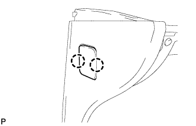 |
Engage the 2 claws and install the instrument panel hole cover.
| 4. Install Glove Compartment Door Stopper Sub-assembly |
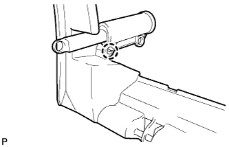 |
Engage the claw and install the glove compartment door stopper sub-assembly.
| 5. Install Cooler Thermistor (Room Temperature Sensor) |
 |
Engage the 2 claws and install the cooler thermistor (room temperature sensor).
| 6. Instrument Panel Sub-assembly Lower Installation |
Engage the 2 claws and insert the 2 guides.
Install screw <C>.
Install the instrument panel sub-assembly LWR with the 2 bolts <D> and 9 screws <E> or <F>.

Connect the connectors.
Engage each clamp.
Install the 2 screws <C>.
Install the cooler thermistor (room temperature sensor) hose.

 |
When using a new instrument panel sub-assembly LWR
After installing the instrument panel sub-assembly LWR, cut off the area shown in the illustration (molding bridge) with nippers.
 |
Engage the 3 claws and install the hood lock control lever.
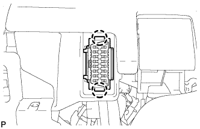 |
Engage the 2 claws and connect the DLC3 connector.
| 7. Shift Lock Control Unit Assembly Connection |
Install the shift lever assembly with the 4 nuts.
Connect the 2 clamps and 2 connectors.
| 8. Switch Hole Base NO.1 Installation |
 |
Engage the 2 clips and 2 claws, and install the switch hole base No.1.
| 9. Install Instrument Panel Finish Panel Lower NO.2 |
 |
Push in the direction of the arrow shown in the illustration to engage the 2 clips and guide.
 |
Install instrument panel finish panel lower No.2 with the 2 screws <C>.
| 10. Install Instrument Panel Finish Panel Lower NO.1 |
 |
Push in the direction of the arrow shown in the illustration to engage the 2 clips and guide.
 |
Engage the 4 claws and 2 guides.
 |
Install instrument panel finish panel lower No.1 with the 2 screws <C>.
| 11. Install Instrument Panel Under Tray |
 |
Engage the 4 claws and install the instrument panel under tray.
| 12. Install Box Bottom Mat |
| 13. Install Console Box Insert |
 |
Insert the guide.
Engage the 3 claws and install the console box insert.
| 14. Fuse Box Opening Cover Installation |
Connect each connector.
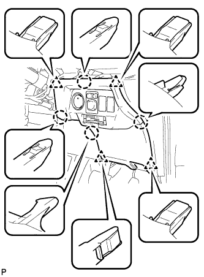 |
Engage the 4 clips and 4 claws, and install the fuse box opening cover.
| 15. Install Instrument Panel Under Cover Sub-assembly NO.2 |
 |
Insert the guide.
Engage the 3 claws and install instrument panel under cover sub-assembly No.2.
| 16. Install Console Box Insert FR NO.2 |
 |
Insert the guide.
Engage the 3 claws and install console box insert FR No.2.
| 17. Install Cowl Side Trim Board RH |
 |
Insert the guide.
Engage the 2 clips and install the cowl side trim board RH.
| 18. Install Front Door Scuff Plate RH |
 |
Engage the 10 claws and install the front door scuff plate RH.
| 19. Install Cowl Side Trim Board LH |
| 20. Install Front Door Scuff Plate LH |
| 21. Install Console Box Assembly Rear |
 |
Insert the 4 guides.
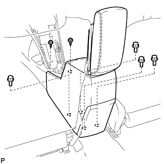 |
Install the console box assembly RR with the 4 bolts and 2 screws.
| 22. Install Console Box Carpet |
 |
Install the console box carpet.
| 23. Install Console Box Cover RR |
 |
Insert the 2 guides, engage the 4 clips and install the console box cover rear.
| 24. Air Conditioner Control Assembly Installation |
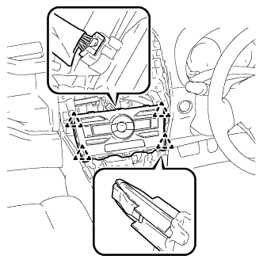 |
Connect the connector.
Engage the 4 clips and install the air conditioner control assembly.
| 25. Navigation Receiver Assembly w/ Bracket Installation (w/ HDD Navigation System) |
Connect the connectors.
 |
Engage the 4 clips and temporarily install the navigation receiver assembly w/ bracket.
 |
Install the navigation receiver assembly w/ bracket with the 4 bolts.
| 26. Install Radio Receiver Assembly w/ Bracket (w/ Radio Receiver) |
Connect the connectors.
 |
Engage the 4 clips and temporarily install the radio receiver assembly w/ bracket.
 |
Install the radio receiver assembly w/ bracket with 4 bolts.
| 27. Radio Tuner Opening Cover w/ Bracket Installation (w/o Radio Receiver) |
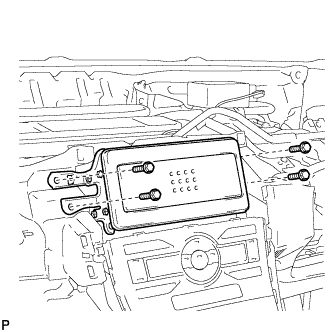 |
Install the radio tuner opening cover w/ bracket with 4 bolts <G>.
| 28. Instrument Cluster Finish Panel Sub-assembly Center Installation (w/o Radio Receiver) |
 |
Engage the 4 clips and install the instrument cluster finish panel sub-assembly CTR.
| 29. Install Turn Signal Switch Assembly w/ Spiral Cable (When Using New Instrument Panel LWR) |
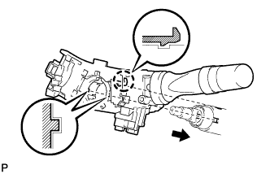 |
Insert the headlight dimmer switch assembly into the steering column so that the protrusion and recess of the rotation stopper are aligned.
Engage the claws and install the headlight dimmer switch assembly.
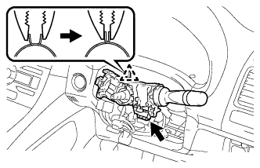 |
Install the band clamp as shown in the illustration
Connect the connector.
| 30. Center Spiral Cable (When Using New Instrument Panel LWR) |
Check that the IG is OFF.
Check that the battery negative terminal is disconnected.
 |
Slowly turn the spiral cable counterclockwise until it locks.
 |
From the locked position, turn the spiral cable back 2.5 turns clockwise and align the matchmarks shown in the illustration.
| 31. Install Steering Column Cover (When Using New Instrument Panel LWR) |
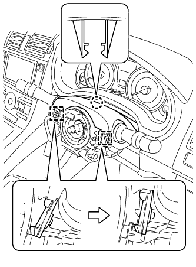 |
Engage the 2 claws and pins, and install the steering column cover (upper side).
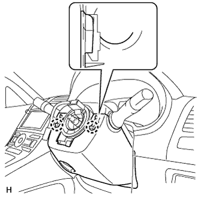 |
Engage the 2 claws and install the steering column cover (lower side).
 |
Engage the 4 claws.
 |
Engage the claws.
| 32. Install Steering Wheel Assembly (When Using New Instrument Panel LWR) |
 |
Align the matchmarks and install the steering wheel assembly to the steering column assembly.
Install the nut.
Connect each connector to the spiral cable.
| 33. Inspect Steering Wheel Center Point (When Using New Instrument Panel LWR) |
| 34. Install Horn Button Assembly (When Using New Instrument Panel LWR) |
Make sure that the ignition switch is OFF.
Check that the battery negative terminal is disconnected.
 |
Connect the airbag connector to the horn button assembly.
Push in the lock of the airbag connector.
Connect the horn connector to the horn button assembly in the direction shown in the illustration.
Push in the horn button assembly to engage the 2 pins and install the horn button assembly to the steering wheel assembly.
| 35. Install Steering Wheel Cover LWR NO.3 (When Using New Instrument Panel LWR) |
Steering Wheel Assembly 3 Spoke:
Engage the 3 claws to install steering wheel cover LWR No.3.
Steering Wheel Assembly 4 Spoke:
Engage the 2 claws to install steering wheel cover LWR No.3.
| 36. Install Steering Wheel Cover LWR NO.2 (When Using New Instrument Panel LWR) |
Steering Wheel Assembly 3 Spoke:
Engage the 3 claws to install steering wheel cover LWR No.2.
Steering Wheel Assembly 4 Spoke:
Engage the 2 claws to install steering wheel cover LWR No.2.
| 37. Install Instrument Panel Airbag Assembly LWR NO.1 |
 |
Connect the connector to the instrument lower airbag No.1.
 |
Install the instrument lower airbag No.1 with the 6 claws and 2 guides.
 |
Install the instrument lower airbag No.1 with the 4 bolts.
| 38. Install Instrument Panel Under Cover Sub-assembly NO.1 |
 |
Connect the connector.
Insert the guide and engage the claw.
Install instrument panel under cover sub-assembly No.1 with the 2 screws.
| 39. Install Instrument Panel UPR w/ Instrument Panel Passenger Airbag Assembly |
 |
Apply protective tape to the positions shown in the illustration.
Engage the 5 claws.
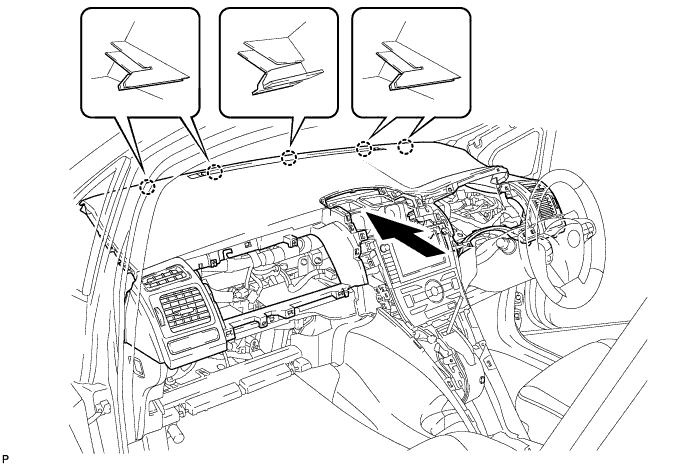
Engage the 4 clips and 3 claws.

Connect the connectors.
Install the 2 instrument panel passenger airbag assembly installation bolts <A>.
Install the instrument panel UPR w/ instrument panel passenger airbag assembly with the 2 screws <B>.
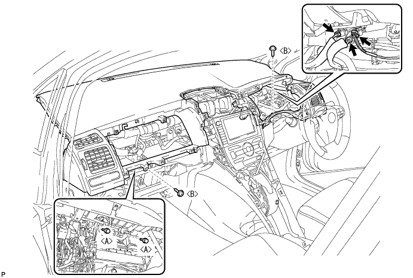
Remove the protective tape that was applied.
| 40. Connect Instrument Panel Passenger Airbag Assembly Connector |
 |
Connect the instrument panel passenger airbag assembly connector.
| 41. Install Instrument Panel Box Door Sub-assembly NO.1 |
 |
Insert instrument panel box door No.1 in the direction of arrow (1).
Insert instrument panel box door No.1 in the direction of arrow (2) so that the upper claws enter the inside of the instrument panel UPR.
 |
Engage the 3 clips and 3 claws.
 |
Install instrument panel box door sub-assembly No.1 with the 2 screws <B>.
Remove the protective tape that was applied.
w/ Stereo Jack Adapter Assembly No.1:
Install the instrument panel finish plate. (see)
| 42. Install Glove Compartment Door Assembly |
 |
Engage the 2 claws of the glove compartment door assembly hinge in the vehicle horizontal direction.
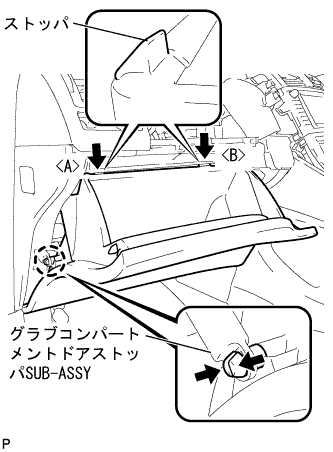 |
Slightly deform parts A and B shown in the illustration in the direction of the arrows and engage the 2 stoppers.
Engage the claws to connect the glove compartment door stopper sub-assembly, and install the glove compartment door assembly.
| 43. Install Instrument Cluster Finish Panel Assembly Center NO.1 |
 |
Engage the 6 clips and 4 claws.
 |
Install instrument cluster finish panel assembly center No.1 with the 2 screws <C>.
| 44. Install Position Indicator Housing Assembly |
Connect the connector.
 |
Engage the 9 claws and install the position indicator housing assembly.
| 45. Install Box Panel NO.2 |
Connect the connectors.
 |
Engage the 2 claws and 4 clips to install box panel No.2.
| 46. Install Shift Lever Knob |
 |
Turn the shift lever knob in the direction of the arrow shown in the illustration to install it.
| 47. Install Front Pillar Garnish RH |
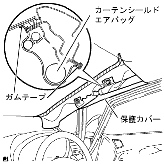 |
Remove the protective cover.
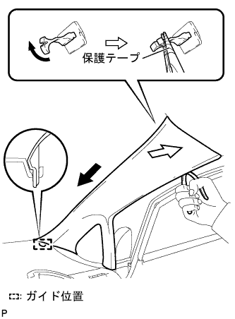 |
Check that the front pillar garnish clips are not damaged.
Insert the guide.
Using needle-nose pliers wrapped with protective tape, turn the front pillar garnish clip 90° and insert it into the front pillar garnish RH.
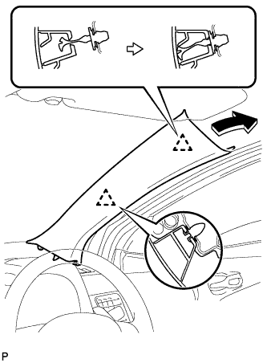 |
Engage the clips and front pillar garnish clip, and install the front pillar garnish RH.
| 48. Install Front Pillar Garnish Corner Piece RH |
 |
Insert the 2 guides B.
Engage the 5 claws and 2 guides A, and install the front pillar garnish corner piece RH.
Remove the protective tape that was applied.
| 49. Install Front Pillar Garnish LH |
| 50. Install Front Pillar Garnish Corner Piece LH |
| 51. Install Instrument Panel Register Assembly CTR |
 |
Connect the connector.
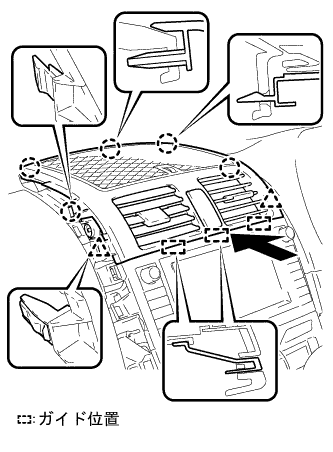 |
Engage the 2 clips, 5 claws and 3 guides, and install the instrument panel register assembly CTR.
| 52. Install Instrument Panel Finish Panel End RH |
 |
Engage the 4 clips and install the instrument panel finish panel end RH.
| 53. Install Instrument Panel Finish Panel End LH |
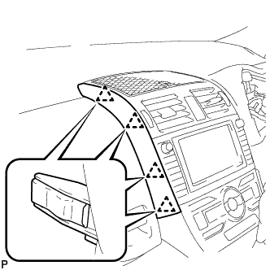 |
Engage the 4 clips and install the instrument panel finish panel end LH.
| 54. Install Combination Meter Assembly |
 |
Connect the connectors and temporarily install the combination meter assembly.
 |
Install the combination meter assembly with the 4 screws.
| 55. Install Instrument Cluster Finish Panel Assembly |
 |
Engage the 2 claws and 9 clips, and install the instrument cluster finish panel.
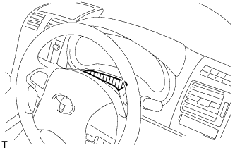 |
Remove the protective tape that was applied.
| 56. Connect Battery Negative Terminal |
| 57. Inspect Shift Lever Position |
Turn IG ON and depress the brake pedal.
When shifting the shift lever to each position, check that the shift lever operates smoothly, moves into each position with a positive feel, and the position indicator shows the position correctly.
Start the engine, and check that the vehicle moves forward when shifting from the N position to the D position, and moves backward when shifting to the R position.
| 58. Inspect Horn Button Assembly (When Using New Instrument Panel LWR) |
Vehicles not involved in a collision
 |
If any of the following applies, replace the horn button assembly with a new one.
 |
Vehicles involved in a collision in which the airbag did not deploy
Remove the horn button assembly, and if any of the following applies, replace the horn button assembly with a new one.
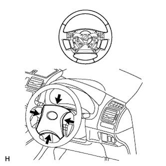 |
If any of the following applies, replace the horn button assembly and steering wheel assembly together with new ones.
| 59. Inspect Airbag Warning Light |
 |
Check that the warning light comes on when the IG is turned ON.
Check that the warning light goes off approximately 6 seconds after the IG is turned ON.
| 60. Setting Procedure When Disconnecting/Reconnecting Battery Terminal |
)